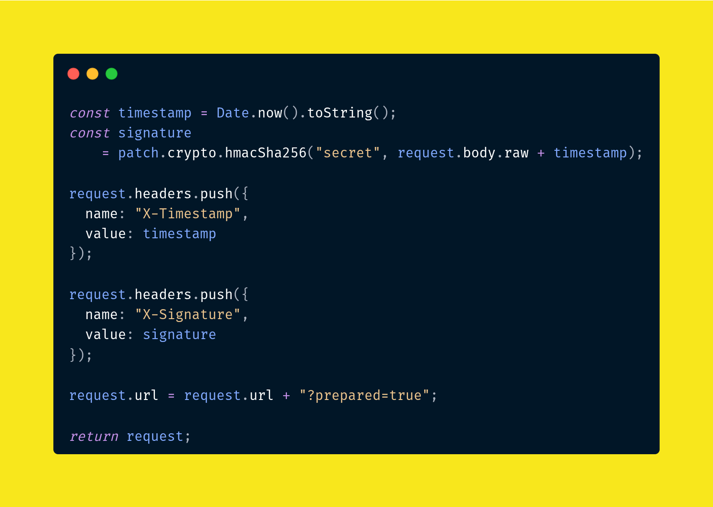

Update notes
Prepare it: Patchman v0.2.1-1 update notes
There is always something missing. That is not a failure; it is the room where a product gets better. Patchman v0.2.1-1 is a small release shaped by that room, and its biggest step is Preparation: a script that lets you do something right before a request is sent.

When Patchman was introduced to the community, people were kind enough to try it, talk about it, and point at the parts that felt useful. Some reviews were encouraging. Some were not so comfortable to read. Both mattered.
A good review tells us there is something worth continuing. A bad review tells us where the work should go next. Between those two things, Patchman gets a clearer direction: keep the app lightweight, keep the workflow close to developers, and keep improving the parts that slow people down.
This update is not a dramatic rewrite. It is a careful step. The kind of step that happens when you listen, adjust, and come back the next day with something a little better than yesterday.
The big one: Preparation
The biggest update in this patch is Preparation script. In simple words, it gives you a place to run JavaScript after Patchman has built the request, but before Patchman sends it.
That small moment before sending can be important. Sometimes a request needs a fresh timestamp. Sometimes it needs a signature based on the final body. Sometimes a token, header, URL, or environment value needs to be prepared at the last second. Preparation is made for that moment.
Instead of manually editing the same values again and again, you can let a script prepare them for you. Press Send, let Patchman build the request, let Preparation adjust what needs to change, then send the final version.
Preparation works best for request data that cannot stay static. You can use it to generate dynamic values, update environment variables, create tokens, or customize request data before execution.
It helps when a request depends on the final URL, body, or headers. You can add a timestamp, sign the request body, append query params, or prepare auth-style values at the last moment. The request you send becomes the request you meant to send.
A cleaner place to work
The first improvement is simple: the interface feels cleaner. Several details have been adjusted so Patchman feels more consistent and more comfortable during everyday API work.
Small UI changes can sound minor on a release note, but they matter when an app is open for hours. Less visual friction means it is easier to move between requests, bodies, automation, and responses without feeling like the tool is asking for extra attention.
JSON that is easier to read
Patchman now supports formatting, or beautifying, JSON in the request body. This makes raw JSON easier to read, edit, and debug during API testing, especially when you are working with larger payloads or nested data.
This is one of those features that feels obvious once it exists. Before that, messy JSON quietly wastes time. Now the request body can be cleaned up in place, so the data becomes easier to understand before you send it.
Start from what already works
Duplicate actions are now available for both collections and requests. When you need a similar structure, you can copy an existing collection or request and adjust only the parts that changed instead of starting again from scratch.
It is a small convenience, but small conveniences add up. A repeated workflow should not punish you for repeating it. If you already built a useful request shape, Patchman should let you reuse it quickly.
There will always be something missing. That is how software grows. Patchman is still taking small steps: listen to feedback, improve what can be improved, and keep moving. Preparation is the big step in this patch, but it still came from the same habit: improve a little every day, and let those small steps become something bigger later.